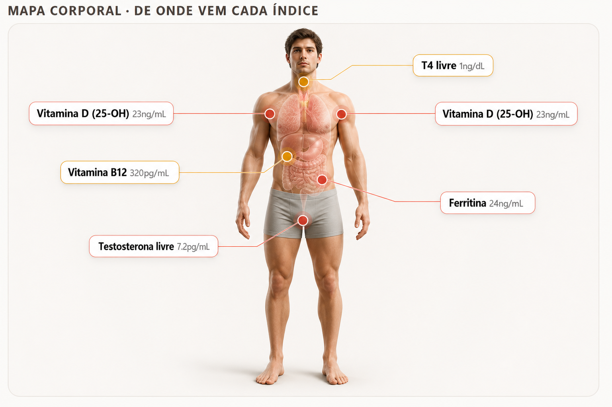
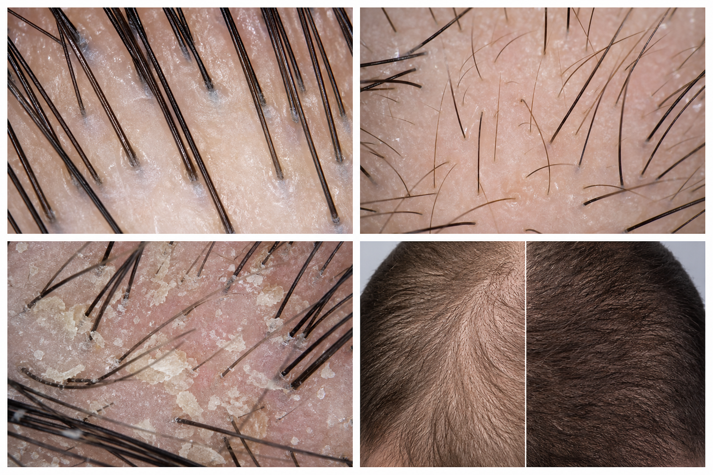

IA · Painel da Clínica — Dr. Rodrigo Redondo · CRM 183765 · Ourinhos & Bauru
Atendimentos por mês · 2026
Clique numa barra para filtrar a lista de pacientes do mês.
Meta mensal
Subir exames do paciente
PDF laboratorial + tricoscopia · a IA checa duplicidade por nome/CPFPacientes atendidos
| Paciente | Sexo | Idade | Mês | Status | Valor |
|---|
Paciente
Mapa corporal · de onde vem cada índice

Clique num ponto do corpo
Clique nos pontos vermelhos. As faixas se ajustam ao sexo; idade e peso entram na leitura clínica.
Dashboard de biomarcadores
| Exame | Resultado | Curva | Faixa ótima | Status |
|---|
Prioridades de atenção
Distribuição do marcador · onde o paciente está
Impacto na saúde capilar
Conduta sugerida
Direcionamento (revisão médica obrigatória)
⚠️ Suporte à decisão. Doses, fórmulas e conduta dependem de prescrição do médico responsável.
Couro cabeludo & resultado
Tricoscopia digital · 200× / 1000×

Antes e depois · caso real

Imagem com leitura da IA · medidas e observações
Medidas extraídas
Leitura do agente (ao vivo)
Sistema de uso interno. Dados deste protótipo são fictícios. Em produção, login do paciente, evolução clínica, comparação de imagens e histórico de exames (Supabase) — identificação mascarável (LGPD por design).
Parâmetros de referência · faixas por marcador
Faixas que o agente usa para classificar cada exame. Em produção, configuráveis pelo médico — faixa normal e faixa ótima, com ajuste por sexo.
| Marcador | Unidade | Normal (M) | Ótima (M) | Ajuste ♀ (normal / ótima) |
|---|